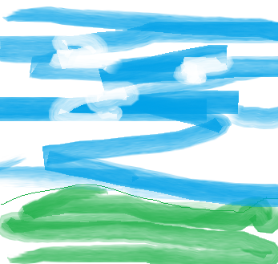

Pealkiri – “Tasuta e-õppe kursused infotehnoloogias – metshein.com”. See tuleb otse sildist.
Kirjeldus – See tuleb väljast. Kui seda pole, loob Google kirjelduse lehe sisust automaatselt.
Domeeni aadress. See on veebiaadress ise, mitte metaandmetest.
Favicon – tulemuses näha väike ikoon. Selle määrad abil.
Alamlingid – “Logi sisse”, “Andmebaaside Alused”, “E-poe Loomine WooCommerce’iga”, “Haridus” jne. Neid ei saa metaandmetega otse kontrollida. Google genereerib need ise, kui veebileht on hästi struktureeritud ja sisemised lingid on selged.

| A | B |
| C | D |
| E | F |